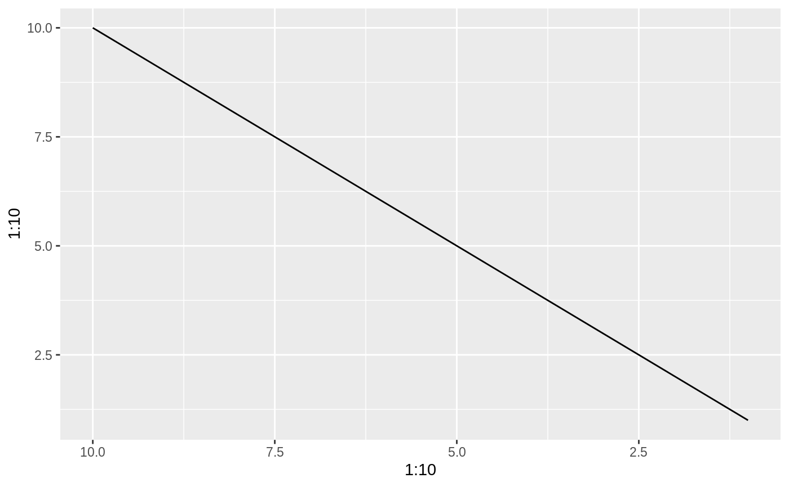
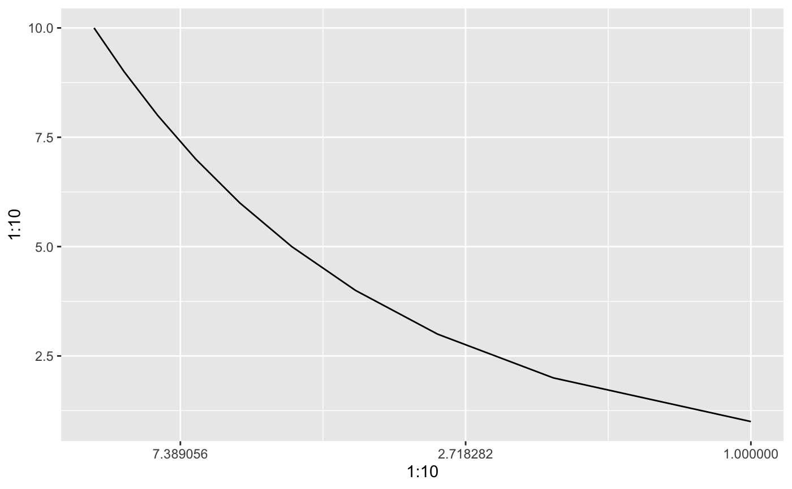

trans_reverser.RdWhile the scales package export a reverse_trans object it does not allow for reversing of already transformed ranged - e.g. a reverse exp transformation is not possible. trans_reverser takes a trans object or something coercible to one and creates a reverse version of it.
trans_reverser(trans)
| trans | A trans object or an object that can be converted to one using
|
|---|
A trans object
# Lets make a plot p <- ggplot() + geom_line(aes(x = 1:10, y = 1:10)) # scales already have a reverse trans p + scale_x_continuous(trans = 'reverse')# But what if you wanted to reverse an already log transformed scale? p + scale_x_continuous(trans = trans_reverser('log'))